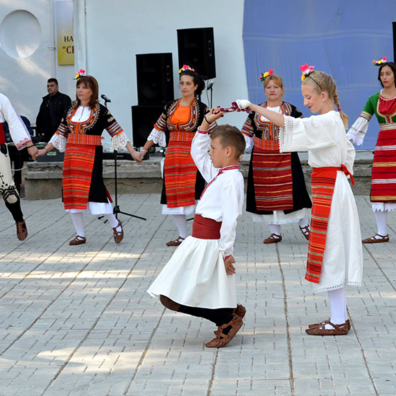

танци

Ако видите българи да танцуват на улицата, хванати за ръце образували големи кръгове или редици, най-вероятно сте попадали на хоро- националния танц на страната. Тази вековна традиция е запазена в България и няколко други балкански държави, и все още събира хората в моменти на единство и спонтанна радост.
Какво е хоро и как се танцува
Хорото включва изучаване на последователност от стъпки и комбинирането им с движения на ръцете, докато свири народна музика. Понякога танцьорите се държат за кръста или изпълняват „танцов диалог“, застанали един срещу друг. Преди петдесет години, танцуването на хоро е бил начин за ухажване. Поглеждайки се в очите по време на танц на мегдана на селото често е означавало, че двамата души се харесват и искат да се оженят. Във време, когато не е имало радио и телевизия, хорото е било основноа форма на забавление.
Видове хоро
За да станат нещата по-сложни, хорото не е единичен танц, а по-скоро сборна дума за десетки видове танци, характерни за различните региони на България. Всеки от тях има свой собствен ритъм и други специфики, като начина, по който хората се държат за ръце или фигурите, които те се формират, докато танцуват. Някои хоро са бавни, докато други включват много скачане и кръстосване на крака. Право хоро е едно от най-лесните и обикновено е първото, на което чужденецът се учи, тъй като има само четири прости стъпки. Други, като чичовото хоро, има поредица от бързи стъпки, които изискват повече време за учене.